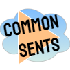

|  |
Welcome to Julian's Common Sents, the media sentiment collector! |
This is for labeling STRONG sentences. This means sentences that imply whether a person is DOING WELL / STRONG or FAILING / WEAK .
"We empower highly trained reporters with automated speech recognition technology to deliver more accurate transcripts, making attorneys more effective and efficient."
...Implies "We", "reporters" and "automated speech recognition" are all positive, because they are all in positions of strength. Attorneys are neutral, because they need help, but aren't doing poorly.
Set:
context with ALT+SHIFT+C
negative with ALT+SHIFT+N
neutral with ALT+SHIFT+K
positive with ALT+SHIFT+P
Special shout-outs to
It's still a work in progress so hit me up with suggestions and questions.
Please share this with your smart friends!
The more people sending me odd samples the better :)
Julian Vanecek
University of Maryland College Park
jsvsentilabel gmail com